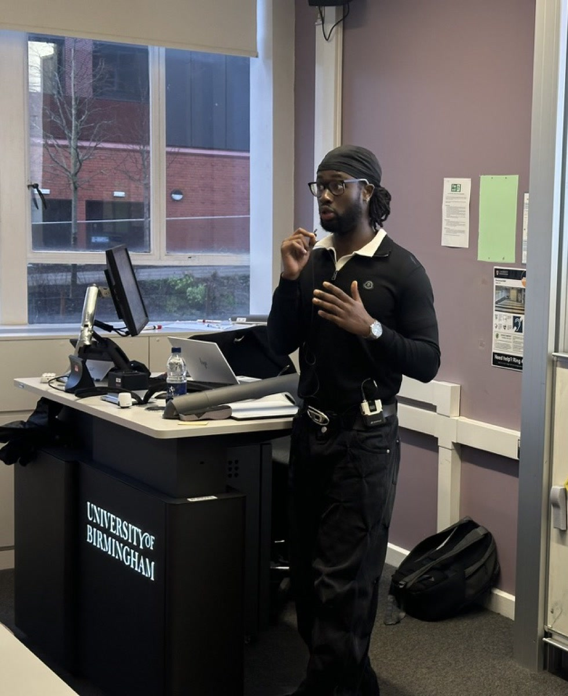
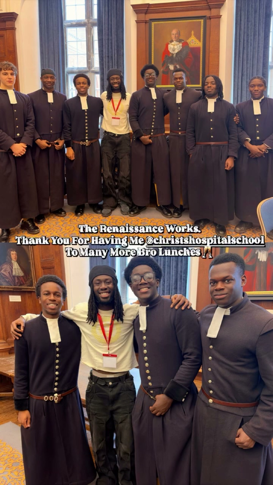

Three set talks, each adaptable from twenty minutes to a full session with Q&A. Delivered in person or online.
"Would you wanna come back and be on the panel as a speaker?"
A continent of fifty-four countries, told past the single story it usually gets.
FOR · SCHOOLS · UNIVERSITIES · CORPORATE NETWORKS · BHM PROGRAMMES
On building a body of evidence instead of waiting to be believed in.
FOR · EARLY-CAREERS COHORTS · EMPLOYEE NETWORKS · SIXTH FORMS
What it costs, and what it returns, to be a young man who does more than one thing well.
FOR · YOUNG MEN'S PROGRAMMES · UNIVERSITIES · COUNCILS · TRUSTS


Delivered at the University of Birmingham, Christ's Hospital, Swanshurst School. ACS Stages From Take Me Out's to Cultural Showcases, Carsicko's Football 1v1's, Career Talks and Workshops at Universities and for Corporations.
"Plenty more of presenter KAYZ to come."
Hosting and presenting for brand events, tournaments, showcases and culture formats.
"AKA #PROFESSIONALFINEBOY, KAYZ wastes no time when it comes to showcasing the depth and extensive nature of his talents... his words land as the lessons learned from his own process & practice."
Longer-term work with young men's programmes. A consigliere in the room, not a guest speaker.
Scoped per programme. If you run one and want to talk, write.
START A CONVERSATION →